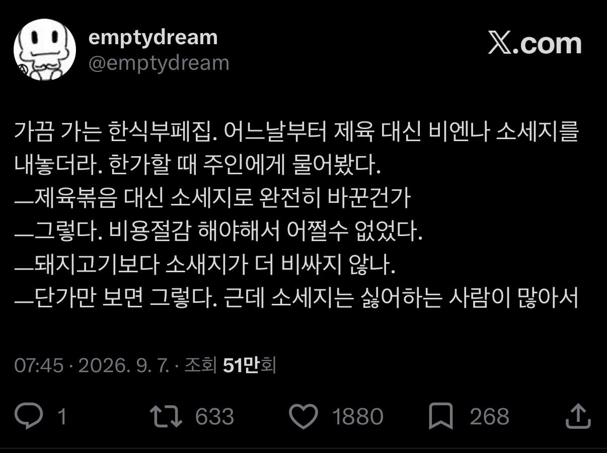
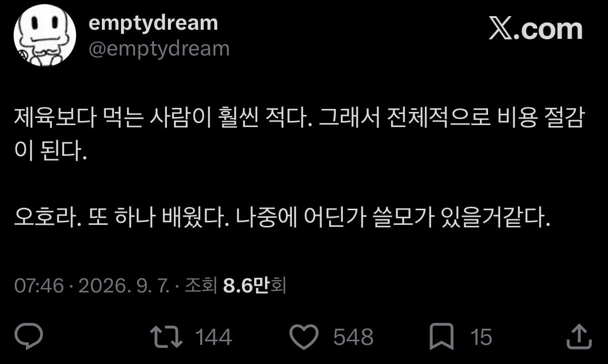

한식뷔페에 제육이 없다고..?
앞으로는 안감 ㅋㅋ
일단 함바집에 제육은 0순위 인데 없으면 걍 장사접어야지 ㅋㅋㅋ
함바집 가본적은 없지만 한식뷔페같은데 보면은 제육이 스테디셀러긴 함 ㅋㅋㅋ
반찬 좆같으면 내가 노가다꾼이라도 안갈듯 ㄹㅇ
함바집 갔는데 제육이 없다? 두번다시안가
제육을 빼는건 원가절감이 아니라 매출감소로 이어진다고
배우긴 뭘 배웠다는거야 병신인가
그럼 소세지를 싫어하는 사람이 안가겠지
이래서 독과점이 잘못된거임
저렇게 비용절감해도 갈 곳이 없으면 답이 없거든 ㅋㅋ
제육 좋아 소세지 싫어 둘다 잃는 장사법ㅋㅋㅋㅋ
장사안하면 원가 0원이긴 하지
곧 원가절감 최대로 하실듯
그럼 다른집 가겠지. 어지간히 작은동네 아니면 하나만 있는곳은 잘 없을건데.
매출에 영향이 없으면 저게 맞을지도
범죄 아닌가???
제육이 없는 한식 뷔페는 할배전용임
제육없으면 왜 감 ㅅㅂ
결제하고나서 보니깐 김치찜일때개열받음
너무맛있어서 한반찬만 거덜나면 손해라고 그러긴하더라
고추장제육 또는 간장제육
둘 다 없으면 닭고기라도 있어야 함
제육 카레 돈까스 부대찌개 무한리필집 있었는데 정말 환상적이었지만 곧 망하더라. 사람들이 넘 많이먹는데 ㅜㅜ
한식뷔페는 사실상 제육덮밥 무한리필 가게인데 ㅋㅋㅋ
배짱장사한다는거네
장사 접겠다는 말이군ㅋㅋ. 제육 안나오는 집이라고 나가면서 다른사람한테 귀띔해줘야 겠다.
소시지도 싸구려쓰겠지 ㅋㅋ
함바집 어차피 죄다 제육있어서..
매일 같이 함바집 가는 공단사람들이면 솔직히 제육 없어도 됨.
하루이틀 먹는것도 아니고 상관없음. 어차피 함바집에 먹을거 천지임
근데.. 메인으로는 제육이 오히려 싸게 먹힐거같은데 흠..
그러니까 함바집에 죄다 제육이 있지
그냥 저 썰이 구라일거같은데.
인근 기업에서 거의 구내식당처럼 고정적으로 이용하면 저럴 수도 있지
보통 내가 없으면 늬들이 어디 갈 수 있는데? 하는 정도로 경쟁 상대가 근처에 없으면 저런 배짱 장사 가능. 그런 케이스인 듯.
소세지(기계발골육 90%)
난 함바집 제육 고기 너무딱딱해서 소세지를 더 좋아하긴하는데...
아니.... 그럼 안 가지 ㅋㅋㅋ
제육, 돈까스, 불고기, 치킨 등 인기메뉴 돌려가면서 막는게 함바 집인데 ㅋㅋㅋ